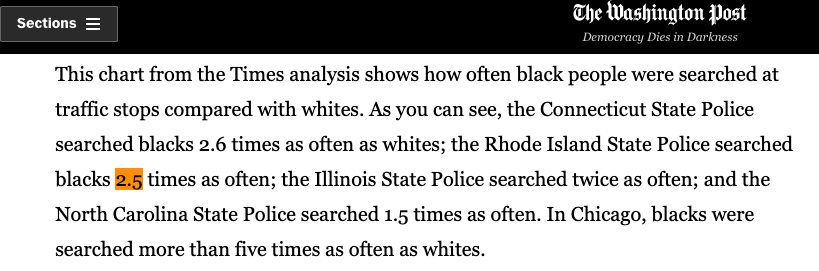

Beyond the benchmark test
Hover for stop rates.
This is a visualization of the typical way we understand racial disparities in policing; we typically count the number of stops by race, adjust for population demographics of the area in question and then compare how likely people of different races are to be stopped. In this case, I tallied up the number of stops by race and then divided those numbers by the numbers of people of each race recorded as living in Rhode Island in the 2010 Census.
This methodology gives rise to the often touted statistic that black drivers are 2.5 times more likely to be stopped than their white counterparts in Rhode Island.
Jeff Guo, Washington Post, 2015

One of the main problems with this strategy is that the demographic population of an area might actually we a bad proxy for who exactly is on the roads when police make these stops and searches. We have no real way of knowing what this sample size really looks like, and it could be unrepresentative of the state as a whole.
So are there other ways to think about potential bias in policing? According to the Stanford Open Policing Project, there are. Researchers published their methodology online with the idea that journalists make use of it in local contexts. I didn't see this work extended to Rhode Island after a bit of light googling, so I thought I'd try it and see what I found.
Hit rates and race
One way is to move past the act of stopping a driver and to think about the steps that follow. Once a driver is stopped, the police then make a decision to search the individual, or not. This search may then be successful — or not. The hit rate is the number of successful searches of a given demographic divided by the number of people of that demographic that were searched. In an ideal world, hit rates would be the same across races.
The rate of success in finding contraband is lower among minorities than white people. This suggests that more minorities are searched based on flimsier evidence once they're stopped when compared to white people.
Hover over for precise hit rates.
For the purposes of further analysis, we will focus on black-white disparities given the widespread prevalence of the 2.5 times statistic.
White hit rate vs black hit rate disaggregated by precinct
This difference might seem slight, but to see if it's part of a trend in policing we're going to disaggregate by department.
After significant data cleaning, it appears that only six precincts reported both black and white successful searches. This seems a little suspicious to me, and follow up reporting would definitely have to check this out. (This analysis assumes that the department entry 000 was the same as 0.)
Four out of six departments had lower black hit rates than white ones. The dots are sized according to the cumulative number of white and black searches. Hover to see what the numbers are.
Veil of Darkness Test
Moving away from searching and back to stopping, here's another way to think about the problem. Assume that at any given time on any day of the year, the people on the road are roughly the same. (This assumption is slightly complicated by seasonal occupations, in my opinion, especially in a state like Rhode Island that's so agro-based, but nevetheless let's give it a go.)
Over the course of the year, darkness falls at different periods in the "inter-twilight" period, roughly 4pm to 9pm. The hypothesis we're trying to test here is: Does darkness have an effect on the likelihood of black drivers being stopped while driving? The theory is that after dark, the likelihood of black drivers being stopped would decrease. But that's not what I found in the trend line in my analysis.
More likely to be stopped
Sunset
Dark
Light
This basically flat line suggests
that darkness has little effect on
policing
Black
drivers
Less likely to be stopped
Proximity to sunset (minutes)
Notes and Further Work
You can find a link to the data here, and the Stanford methodology here. I used pandas, seaborn, ai2html and d3 to analyze and visualize interesting findings.
I haven't yet run a regression on the Veil of Darkness Test; when Columbia covers algorithms in the spring I'll give it a go. I also haven't made an attempt to identify precincts yet, which would be the next step in terms of data verification and further exploration.